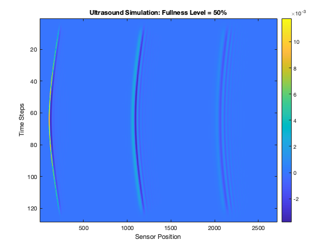
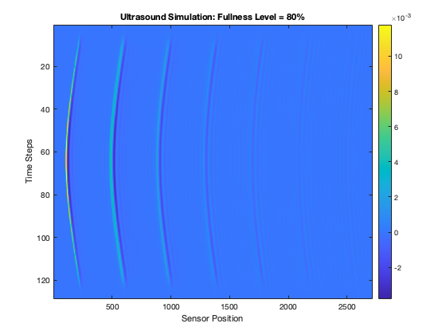

clear all;
clc;
Nx = 128;
Ny = 128;
dx = 0.1e-3;
dy = 0.1e-3;
kgrid = kWaveGrid(Nx, dx, Ny, dy);
medium.sound_speed = 1500 * ones(Nx, Ny);
medium.density = 1000 * ones(Nx, Ny);
stomach_wall_speed = 1540;
medium.sound_speed(1:Nx/2, :) = stomach_wall_speed;
fullness_levels = [0.2, 0.5, 0.8];
for i = 1:length(fullness_levels)
fullness = fullness_levels(i);
empty_sound_speed = 343;
full_sound_speed = 1480;
full_grid_height = round(fullness * Nx / 2);
empty_grid_height = Nx/2 - full_grid_height;
medium.sound_speed(Nx/2:(Nx/2+empty_grid_height-1), :) = empty_sound_speed;
medium.sound_speed((Nx/2+empty_grid_height):end, :) = full_sound_speed;
source.p0 = zeros(Nx, Ny);
source.p0(Nx/4, Ny/2) = 1;
sensor.mask = zeros(Nx, Ny);
sensor.mask(Nx/2, :) = 1;
kgrid.makeTime(medium.sound_speed);
sensor_data = kspaceFirstOrder2D(kgrid, medium, source, sensor);
figure;
imagesc(sensor_data);
xlabel('Sensor Position');
ylabel('Time Steps');
title(['Ultrasound Simulation: Fullness Level = ', num2str(fullness * 100), '%']);
colorbar;
end
Running k-Wave simulation...
start time: 08-Sep-2024 12:30:08
reference sound speed: 1540m/s
dt: 19.4805ns, t_end: 52.7727us, time steps: 2710
input grid size: 128 by 128 grid points (12.8 by 12.8mm)
maximum supported frequency: 1.715MHz
smoothing p0 distribution...
precomputation completed in 0.59468s
starting time loop...
estimated simulation time 16.0543s...
simulation completed in 20.1175s
total computation time 20.8582s
Running k-Wave simulation...
start time: 08-Sep-2024 12:30:30
reference sound speed: 1540m/s
dt: 19.4805ns, t_end: 52.7727us, time steps: 2710
input grid size: 128 by 128 grid points (12.8 by 12.8mm)
maximum supported frequency: 1.715MHz
smoothing p0 distribution...
precomputation completed in 0.52189s
starting time loop...
estimated simulation time 11.9089s...
simulation completed in 19.2928s
total computation time 19.8886s
Running k-Wave simulation...
start time: 08-Sep-2024 12:30:50
reference sound speed: 1540m/s
dt: 19.4805ns, t_end: 52.7727us, time steps: 2710
input grid size: 128 by 128 grid points (12.8 by 12.8mm)
maximum supported frequency: 1.715MHz
smoothing p0 distribution...
precomputation completed in 0.37668s
starting time loop...
estimated simulation time 10.775s...
simulation completed in 14.1427s
total computation time 14.5744s
 